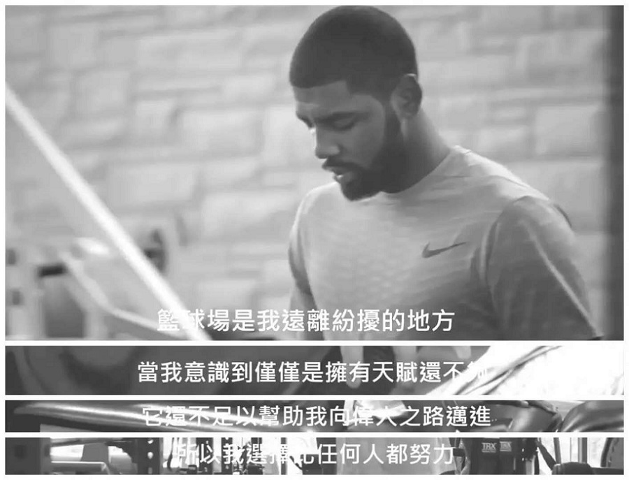

欧文再谈地平说：我只想让人们能有不同看法 |
|  |
| 腾讯体育讯 北京时间6月9日，《纽约时报》报道，凯里-欧文目前还在养伤，近期他接受了媒体采访，在访谈里他再次提到地平说。 问：在场外看凯尔特人队在季后赛前景是不是特别难过，你现在膝盖恢复得如何？ 欧文：现在我的恢复治疗基本上是每天一次，我们都知道这是一个过程，要努力让事情恢复到正轨上。这个休赛季对我来说会不一样，我会更加关注在我的身体上，还有在精神上也要为下个赛季做好准备。我对于队友们在季后赛取得的成就感到超级骄傲，他们一起克服了很多事情，虽然东决第七场并没有按照我们的计划发展，但是我知道这些球员，他们在季后赛里已经付出所有。 问：圣帕特里克高中时期，你曾参与过《歌舞青春》的演出，你自己有个人的专长吗？ 欧文：我是一个想成为厨师的篮球运动员，我确实有专长，在烹饪法国焦糖蛋奶冻方面，对于我来说，这是一个让我摆脱在公众场合演讲紧张的机会，我知道如果我去台上唱歌或者表演的话，那么我应该会在公众面前去表达我自己的一些想法。 问：你觉得自己找到挑战自己的方法吗，或者你会不会容易感到厌倦？ 欧文：不，我不想这样说，我除了篮球之外还有很多兴趣，我会发展自己，变得更加知识渊博，如果能够涉及其他伟大的事情，我也会很骄傲。 问：你总是在说想尝试不同的事情，我必须要问，当然这个问题你也被问过很多次，这是你认为“地球是平的”原因吗，或者你想展示自己的与众不同？ 欧文：不是，那个时候我想说那个的时候，我曾经因为自己的这个想法受到很多批评，其中也有很多不同的观点，或者别人觉得我疯了。当你去从不同角度去想事情时，他们就有了反应，就有说“那是一个知名人士的想法等等”。我没办法，我想把这个争论放到更大的舞台上，而现在变成我们双方你来我往的对抗，目前为止，说这些有什么意义吗？ 本赛季欧文为凯尔特人队参加60场比赛，场均得到24.4分5.1次助攻3.8个篮板，但是因伤报销无缘季后赛。 |